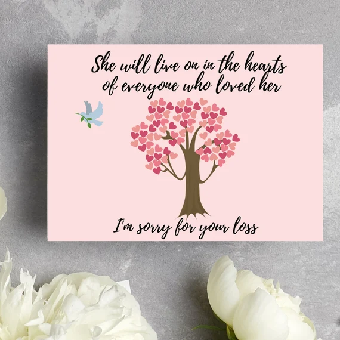

Ever since I was small, my grandmother Eleanor was a main pillar of support in my life. She would help me through the highs and the lows, and supported me even when times were tough. I wish that this website stands as a solid tribute to her, despite the fact that I will never... never ... be able to put the lasting impact she had on me and my family into words. That being said, I hope that you will be able to enjoy the touching memories of the journey my grandma Eleanor and I had together, and recognize the unwavering love, wisdom, and kindness she shared with everyone around her.
This is the last X-ray taken of my grandmother. Unfortunately, on her way to her neighbors house, she tripped over the curb and got a fatal injury to her jaw. A jaw transplant would have cost a large amount of money, which our family couldn't afford. Sadly, she passed away two days later, and was able to set her last messages and wishes in check. Her lasts words were, "Remember me in laughter, not sadness." Her legacy will forever live on, and we will shortly be beginning a fundraiser to donate towards elderly accident awareness. If possible, please take into consideration the amount of accidents that could be prevented daily, and remember: safety first.
When my grandmother was younger, she was a sixth-grade english teacher, and she loved her job. She enjoyed the fact that she was able to contribute to the future generation, and her students loved her way of teaching, personality, and were stunned to hear of her death. For her former-students who are reading this currently, I am truly grateful that you come here to show your appreciation for my grandmother. You were always in her mind, and she took great pride in the fact that she was able to shape young minds and inspire a love for learning. That being said, I encourage you all to cherish your time with elders, and always appreciate and respect the impact that they have on all of our lives, similar to the impact Mrs. Eleanor had on us.
My grandmother had many hobbies when she was alive, and she liked to do activities such as crocheting, baking, but mainly spending time with her family. Preferably she liked doing all of these things at the same time, and she often gave away clothing she crocheted to orphanages and shelters to help others. She was always thinking about helping others, and never prioritized herself over others. In fact, she was on her way to give a batch of cookies to her neighbors until she was met with the unfortunate accident. Loved by people all around, she had many hobbies, however her favorite activity was being able to use her skills for the well-being of others.
Ever since her death, there have been many people come to me offering their condolences and sharing their thoughts about my family's loss. And because I cannot thank you all enough, I wrote segment to say thank you. I will keep you all in my prayers, and I am exponentially grateful for your words of support in this difficult time. And I am sure, if Mrs. Eleanor was here with us today, she would have been entirely touched by the community's support. So again, thank you all so much, and for taking your time to remember her legacy.
